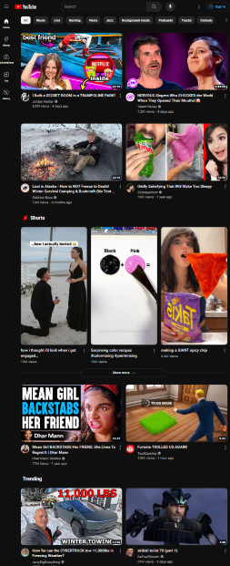

White Spacing
This focuses on the structure of content for the user’s readability, accessibility, and developer use of negative space to build importance on the content throughout the page. Like the use of micro or macro white space. Mirco uses texted content in smaller spaces between the content to be “quick and snappy” to the next content. While a home page has more of bigger layout to show a message through images with short and easy text in a wide spacing for macro.
venngage.com
This site is a great micro example, by using the space apart of lines in each p and to each other p. And using h1 and h2 above the content builds the idea what idea the blog from beginning to end for a smoother blog read.
Fitts' Law
This is a studied behavior of the used time to interaction. By design, a link in a header menu or a search bar to type need to be easy to find, understand, and use.
youtube.com
This social media site brought videos more attention to the user by any picture of any video and title. The “thumbnails” are clickable from the size of the image and the clickbait to draw an eye. On the top, has a “Search” bar to type and look up whatever list of videos they want.
Rule of Thirds
Finally, going through a third time in a row, is design in thirds in a 3 by 3 rows and column grid for vertical and horizontal. To bring focus on the four points of a square to form the center of attention.
steampowered.com
On the center, here selection of games for “Now Available”, “Featured”, and “Special Offers” to know what to expect throughout the online store. Drawing the eye of the user and seeing the patterns of the site to view in-line with other principles. From that, it’s easy to select the game and read through the page to possible buy the product and enjoy the experience.